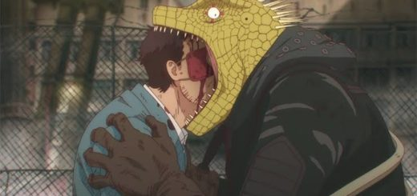
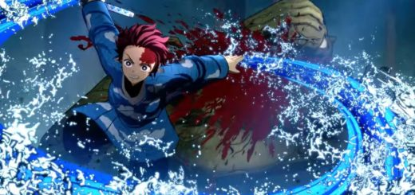
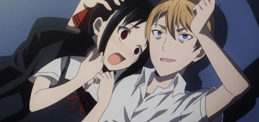

MAIO 30, 2021
Dorohedoro – Mangá de ação gore vai ser lançado no Brasil
A Panini anunciou recentemente que irá fazer a publicação do mangá de Dorohedoro. O mangá terá capa cartonada fosca e miolo em papel offwhite 66g e começará a ser publicado mensalmente a partir de agosto. O preço será de R$29,90.
A obra já foi finalizada com 23 volumes e recebeu uma adaptação em anime pelo estúdio MAPPA (Jujutsu Kaisen, Dororo) em 2020.
Fonte: Marcelo Almeida

MAIO 26, 2021
Kimetsu no Yaiba – Jogo ganha novo trailer e chega ao ocidente ainda esse ano!
A Sega anunciou oficialmente que o jogo de Kimetsu no Yaiba irá ser lançado no ocidente. A publicadora abriu um site em inglês para o título e compartilhou um vídeo legendado, mas já informou que o jogo também contará com áudio em inglês.
Demon Slayer: Kimetsu no Yaiba- The Hinokami Chronicles ainda não tem um previsão exata de lançamento, mas foi prometido para esse ano com versões para PS4, PS5, Xbox One, Xbox Series S/X e Steam (PC).
Na história você acompanha um garoto que, após perder quase toda a sua família em um massacre feito por um demônio, e ter sua irmã transformada em uma dessas criaturas, decide se tornar um caçador de demônios, afim de se vingar e procurar uma cura para a mudança de sua irmã.
Fonte: Marcelo Almeida

MAIO 22, 2021
Kaguya-sama – Mangá terá pausa de 1
mês para autor preparar novo arco
Um informante confiável confirmou recentemente que o mangá de Kaguya-sama
irá ter uma pausa de 1 mês após o seu próximo capítulo, que deve ser lançado no dia 27 de maio.
De acordo com o informante, o motivo dessa pausa é para o autor se preparar para o
novo arco que será mais elaborada e argumentativo.
Na história a vice-presidente, e o presidente estudantil, ambos considerados os maiores gênios da escola, gostam muito um do outro,
mas por orgulho, e suas personalidades bizarras, querem fazer o outro se apaixonar completamente e se declarar.
A história acompanha o dia a dia deles, enquanto ficam em uma guerra fria tentando que o outro se declarar.
Fonte: Marcelo Almeida
.png)